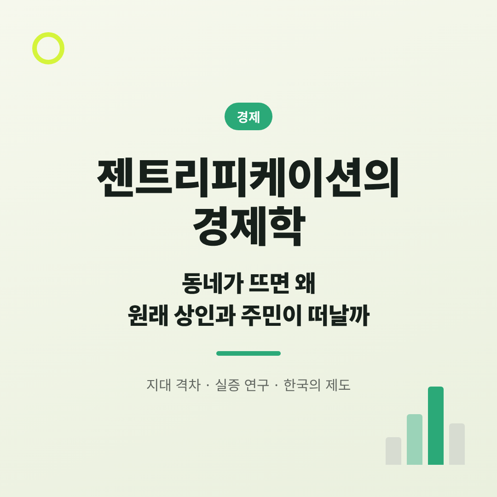
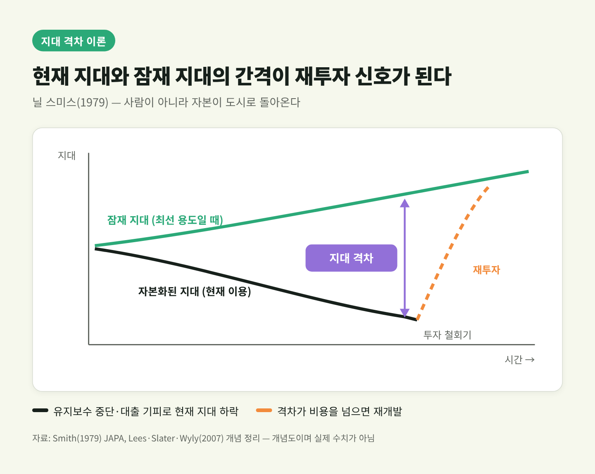
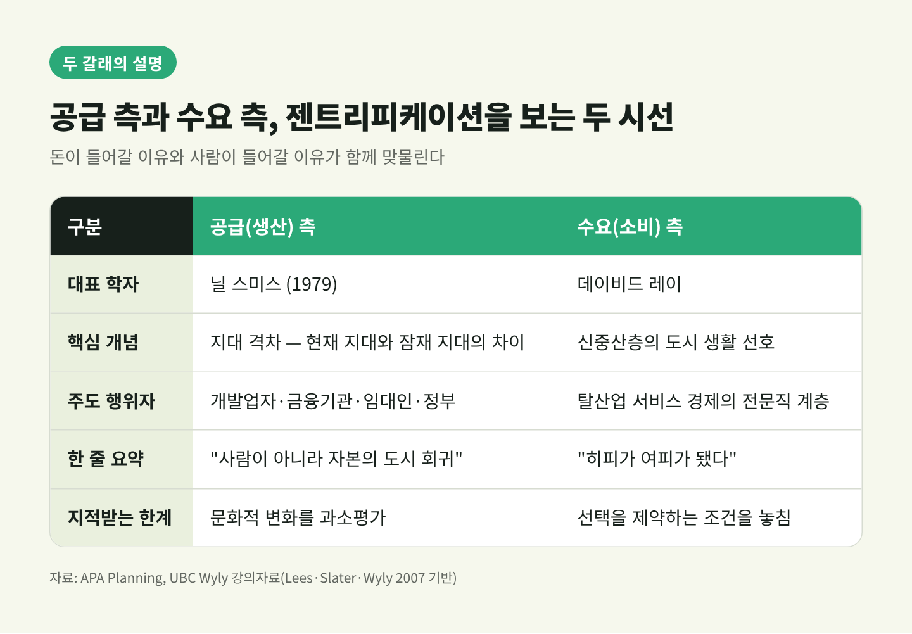
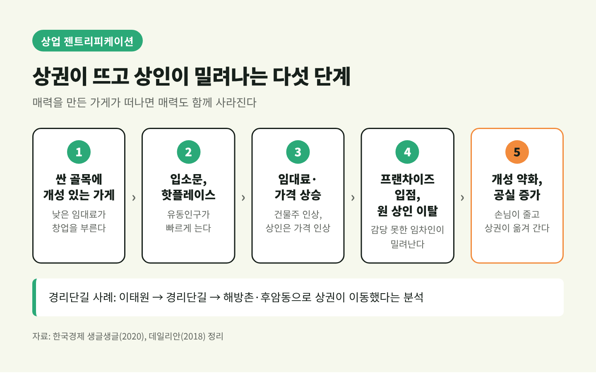
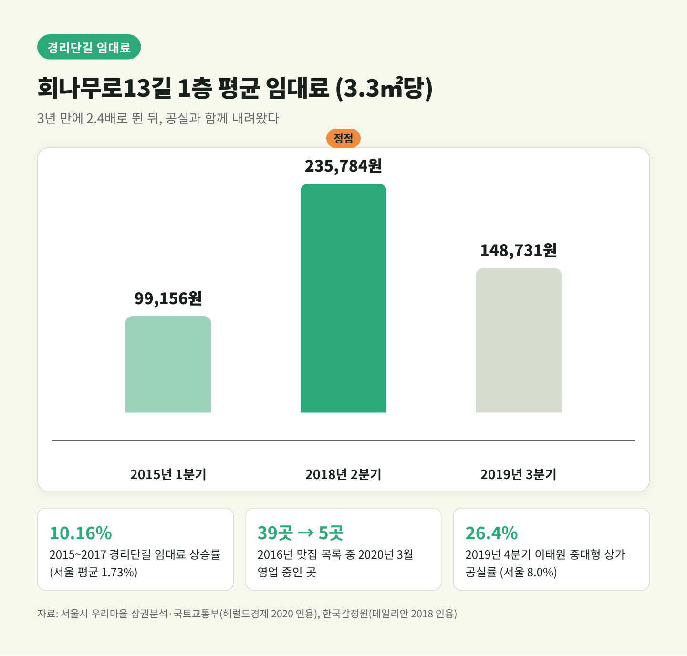
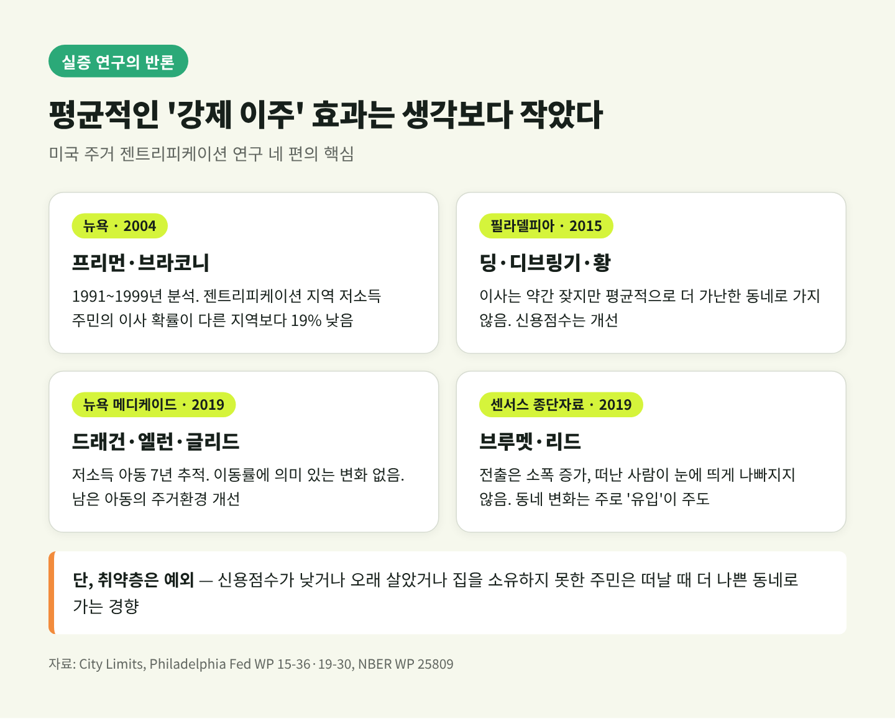
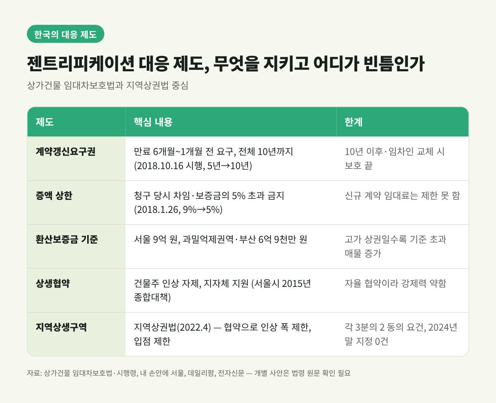

젠트리피케이션의 경제학 — 동네가 뜨면 왜 원래 상인과 주민이 떠날까

오늘은 젠트리피케이션을 경제학의 눈으로 정리해 보려 합니다. 동네가 뜨면 왜 처음 그 동네를 살린 사람들이 먼저 떠나는지, 이론과 실증 연구, 한국의 제도까지 차례로 살펴보겠습니다.
먼저 세 줄로 요약하면 이렇습니다.
- 젠트리피케이션은 '지금 거두는 임대료'와 '거둘 수 있는 임대료'의 차이, 곧 지대 격차가 벌어질 때 일어납니다.
- 미국 실증 연구들은 평균적인 '강제 이주' 효과가 생각보다 작다고 봅니다. 다만 취약한 사람일수록 더 나쁜 곳으로 밀려난다는 결과도 함께 나옵니다.
- 한국은 상가 임대차 갱신 10년, 증액 상한 5%, 상생협약으로 대응하고 있지만, 제도마다 빈틈과 대가가 있습니다.
■ 1964년 런던에서 시작된 말
젠트리피케이션이라는 말은 1964년에 생겼습니다. 영국 사회학자 루스 글래스가 UCL 도시연구센터에서 일하던 때입니다.
그는 자신이 엮은 논문집 『London: Aspects of Change』 서문에서 이 단어를 썼습니다. 관찰한 곳은 런던의 이즐링턴과 노팅힐이었습니다. 집을 고칠 돈이 있는 중산층이 들어오고, 원래 살던 노동계급이 밀려나는 모습이었습니다.
글래스는 이 과정이 한 지구에서 시작되면 "원래의 노동계급 거주자 전부 또는 대부분이 밀려날 때까지 빠르게 진행된다"고 적었습니다. '젠트리(gentry)', 즉 영국의 신사 계층이 동네를 채워 간다는 뜻을 담은 조어입니다.
한국에서는 이 현상을 '둥지 내몰림'이라고 풀어 부르기도 합니다. 낙후된 구도심이 살아나면서 중산층이 들어오고, 기존 저소득층과 원주민이 밖으로 밀려나는 현상을 가리킵니다.
■ 공급 측 설명 — 닐 스미스의 지대 격차
젠트리피케이션을 경제 이론으로 처음 단단하게 설명한 사람은 지리학자 닐 스미스입니다. 그는 1979년 미국계획협회지(JAPA)에 「젠트리피케이션 이론을 향해 — 사람이 아니라 자본의 도시 회귀」라는 논문을 실었습니다.
제목이 곧 주장입니다. 당시 주류 설명은 중산층의 취향 변화, 곧 '사람'이 도심으로 돌아온다는 이야기였습니다. 스미스는 개발업자·금융기관·임대인·정부처럼 돈의 흐름을 쥔 쪽을 봐야 한다고 반박했습니다.
핵심 개념은 두 가지 지대입니다.
- 자본화된 지대: 지금의 토지 이용으로 실제 거둬들이는 지대
- 잠재 지대: 그 땅을 가장 수익성 높은 용도로 쓸 때 얻을 수 있는 최대 지대
이 둘의 차이가 지대 격차입니다. 매입비와 수리비, 금융비용을 치르고도 충분한 수익이 남을 만큼 격차가 벌어지면, 그때부터 재투자가 수익성을 가집니다. 스미스의 표현을 빌리면, 개발업자가 낡은 건물을 싼값에 살 수 있을 만큼 격차가 커질 때 젠트리피케이션이 일어납니다.

격차는 저절로 생기지 않습니다. 교외화로 사람과 돈이 도시 밖으로 빠져나가면 도심 건물은 낡아 갑니다. 소유주는 유지보수를 미루고, 은행은 대출을 꺼립니다. 이렇게 투자가 빠진 시기가 길수록 현재 지대는 내려가고, 잠재 지대와의 거리는 멀어집니다.
물론 한계도 지적됩니다. 1960~70년대의 문화적 변화를 너무 작게 봤다는 비판입니다. 그래도 이 이론은 지금까지 젠트리피케이션 연구의 출발점으로 꼽힙니다.
■ 수요 측 설명 — 누가, 왜 그 동네를 원하는가
반대편에는 수요, 곧 소비와 취향을 강조하는 설명이 있습니다. 지리학자 데이비드 레이는 캐나다 도시들을 연구하며 '신중산층'에 주목했습니다.
탈산업화로 서비스 경제가 커지면서, 전문직 중심의 새로운 중산층이 생겼습니다. 이들은 교외의 획일적인 삶보다 다양성과 관용, 도시 생활의 질을 원했습니다. 레이는 이 변화를 "히피가 여피가 됐다"는 말로 압축했습니다.
주류 경제학의 입찰지대 모형도 비슷한 방향입니다. 넓은 공간과 도심 접근성 사이에서 소비자의 선택이 바뀌면, 도시 안에 새로운 균형이 생긴다고 봅니다. 다만 이 모형은 선택 자체를 제약하는 조건을 놓친다는 비판을 받습니다.

두 설명은 서로를 배척하기보다 보완합니다. 돈이 들어갈 이유(격차)와 사람이 들어갈 이유(취향)가 함께 맞물릴 때 동네가 움직입니다.
■ 상권이 뜨고 상인이 밀려나는 순서
한국에서 흔히 말하는 젠트리피케이션은 주거보다 '상권'에서 두드러집니다. 진행 순서는 대체로 비슷합니다.
- 임대료가 싼 낡은 골목에 개성 있는 가게가 들어섭니다.
- 입소문이 나고 '핫플레이스'가 됩니다.
- 건물주가 임대료를 올리고, 상인은 가격을 올려 버팁니다.
- 유명 프랜차이즈가 들어오고, 감당하지 못한 원래 상인이 떠납니다.
- 동네의 개성이 옅어지면 손님이 줄고 공실이 늘어납니다.
학계에서 말하는 단계와도 겹칩니다. 투자 철회 → 개척자의 수리 → 대규모 재개발 → 성숙의 흐름입니다. 성숙 단계에서는 가격이 오르면서 새로 들어온 사람들도 오히려 배타적으로 변한다는 관찰이 있습니다.

주목할 점은 마지막 단계입니다. 동네를 매력 있게 만든 가게들이 떠나면, 그 매력도 같이 사라집니다. 임대료를 끌어올린 힘이 결국 임대료를 받쳐 줄 손님을 밀어내는 셈입니다.
■ 경리단길·익선동·성수동에서 본 숫자
경리단길은 이 순서를 가장 선명하게 보여 준 곳입니다. 한국감정원 자료로 2015~2017년 경리단길 임대료는 10.16% 올랐습니다. 같은 기간 서울 평균 1.73%의 약 6배입니다.
서울시 상권분석 서비스 기준으로 회나무로13길 1층 평균 임대료(3.3㎡당)는 2015년 1분기 9만 9,156원이었습니다. 2018년 2분기에는 23만 5,784원까지 올랐습니다. 그 뒤 2019년 3분기에는 14만 8,731원으로 내려왔습니다.

내려간 이유는 반가운 것이 아니었습니다. 2016년 2월 용산구가 '세계음식지도'에 올린 경리단길 일대 맛집 39곳 가운데, 2020년 3월에 영업 중인 곳은 5곳뿐이었다는 보도가 있습니다. 2019년 4분기 이태원 중대형 상가 공실률은 26.4%로, 서울 45개 상권 가운데 가장 높았습니다. 서울 평균은 8.0%였습니다. 상권은 이태원에서 경리단길로, 다시 해방촌과 후암동으로 옮겨 갔다는 분석도 나왔습니다.
익선동은 주거 쪽 변화가 함께 드러난 경우입니다. 1920~50년대 한옥이 모인 이곳은 오래 재개발에 묶여 있다가, 2014년 무렵 추진위원회가 해산된 뒤 카페와 식당이 빠르게 들어섰습니다. 보도에 따르면 한옥 118채 가운데 주거용은 37채만 남았고, 2014~2016년 주민 377명이 동네를 떠났습니다. 서울시는 2018년 한옥밀집지역 지정과 지구단위계획으로 철거와 고층 개발을 막고, 프랜차이즈 제한을 추진했습니다.
성수동은 대응이 가장 일찍 시작된 곳입니다. 성동구는 2015년 9월 전국 226개 지자체 가운데 처음으로 젠트리피케이션 방지 조례를 만들었습니다. 주민협의체가 입점 업체를 심의하고, 유흥업소와 대형 프랜차이즈를 제한했습니다. 그럼에도 연무장길 3.3㎡당 임대료는 2022년 3분기 15만 7,618원에서 2023년 3분기 21만 446원으로 33% 올랐습니다. 팝업스토어가 몰리며 짧은 기간에 높은 임대료를 내는 수요가 생긴 영향이 거론됩니다.
■ 반론 — 강제 이주는 생각보다 적다는 연구들
여기까지 보면 젠트리피케이션은 곧 대규모 내몰림처럼 보입니다. 그런데 미국의 실증 연구들은 조금 다른 그림을 보여 줍니다.
- 프리먼과 브라코니(2004)는 1991~1999년 뉴욕을 분석했습니다. 젠트리피케이션 지역의 저소득 주민은 다른 지역보다 이사할 확률이 19% 낮았습니다.
- 필라델피아 연준의 딩·디브링기·황(2015)은 2002~2014년 신용 데이터로 주민을 추적했습니다. 젠트리피케이션 지역 주민은 조금 더 자주 이사했지만, 전체적으로 더 가난한 동네로 옮기지는 않았고 신용점수는 개선됐습니다.
- 드래건·엘런·글리드(2019)는 뉴욕 메디케이드 기록으로 저소득 아동을 7년간 따라갔습니다. 젠트리피케이션과 이동률 사이에 의미 있는 변화는 없었습니다.
- 브루멧과 리드(2019)는 젠트리피케이션이 전출을 '소폭' 늘리지만, 떠난 사람이 눈에 띄게 나빠지지는 않았다고 봤습니다. 남은 주민은 빈곤 노출이 줄고, 일부 아이들은 대학 진학과 졸업이 늘었습니다.

그렇다고 걱정이 사라지는 것은 아닙니다. 딩 등의 연구는 신용점수가 낮거나 오래 살았거나 집을 소유하지 못한 주민이 떠날 때, 소득이 더 낮고 생활 여건이 나쁜 동네로 간다는 점도 확인했습니다. 연구자들은 진짜 변화가 '내몰림'보다 '대체'에 있다고 봅니다. 떠나는 비율은 비슷해도, 빈자리를 고소득 신규 유입자가 채우는 것입니다. 남은 사람은 오른 임대료와 장바구니 물가를 감당해야 합니다.
한 가지 짚어 둘 점이 있습니다. 이 연구들은 대부분 미국의 '주거'를 대상으로 합니다. 한국에서 문제가 되는 '상가 임차 상인'의 사정과 그대로 겹쳐 보기는 어렵습니다. 가게는 집보다 이전 비용이 크고, 단골과 권리금처럼 옮길 수 없는 자산이 쌓이기 때문입니다.
■ 한국의 제도 — 갱신 10년, 증액 상한 5%
한국은 주로 상가건물 임대차보호법으로 대응합니다.
계약갱신요구권 10년. 임차인은 계약 만료 6개월 전부터 1개월 전까지 갱신을 요구할 수 있고, 임대인은 정당한 사유 없이 거절하지 못합니다. 거절할 수 있는 사유는 3기분 차임 연체 등 법에 정한 경우로 한정됩니다. 이 권리는 최초 계약 기간을 포함해 전체 10년을 넘지 않는 범위에서 쓸 수 있습니다. 2018년 10월 16일 시행된 개정으로 5년에서 10년으로 늘었고, 시행 이후 처음 체결되거나 갱신된 계약부터 적용됩니다.
증액 상한 5%. 시행령 제4조는 차임이나 보증금 증액이 "청구당시의 차임 또는 보증금의 100분의 5의 금액을 초과하지 못한다"고 정합니다. 2018년 1월 26일부터 9%에서 5%로 낮아졌습니다.
환산보증금 기준. 5% 상한 같은 보호는 환산보증금 기준 이내 계약에 적용됩니다. 현재 서울은 9억 원, 과밀억제권역과 부산은 6억 9천만 원입니다. 다만 갱신요구권과 대항력, 권리금 회수 기회 보호는 기준을 넘는 계약에도 적용됩니다.

지역상생협약과 지역상권법. 서울시는 2015년 11월 광역지자체 가운데 처음으로 종합대책을 내놓았습니다. 건물주가 임대료 인상을 자제하고, 임차인은 영업 질서를 지키며, 지자체가 환경 개선을 지원하는 상생협약이 중심이었습니다. 성동구는 2017년부터 임대료 인상을 물가 수준으로 억제하는 건물주에게 용적률 인센티브를 주기도 했습니다. 2021년 성동구 연구에서는 협약 건물의 임대료 상승률이 2.49%로, 미체결 건물보다 0.36%p 낮았다고 합니다.
2022년 4월에는 지역상권법이 시행됐습니다. 상인과 임대인이 협약을 맺어 임대료 인상 폭을 제한하는 '지역상생구역'을 둘 수 있게 했습니다. 하지만 토지소유자·임대인·임차인 각각 3분의 2 이상 동의가 필요해, 2024년 말까지 지정 사례가 없었다는 보도가 나왔습니다.
■ 정책의 트레이드오프
어느 제도든 얻는 것과 내주는 것이 함께 있습니다.
- 갱신권과 증액 상한은 기존 상인에게 시간을 벌어 줍니다. 그러나 새 계약의 임대료는 막지 못합니다. 10년이 끝나는 시점이나 임차인이 바뀌는 순간 가격은 한꺼번에 조정될 수 있습니다.
- 환산보증금 기준은 영세 상인을 우선 보호합니다. 반면 임대료가 높은 인기 상권일수록 기준을 넘는 매물이 많아집니다. 2023년 10월 성수동 매물의 약 20.4%가 서울 기준 9억 원을 넘었다는 보도도 있습니다.
- 자율 협약은 갈등을 줄이지만 강제력이 약합니다. 요건을 강하게 만들면 이번에는 지정 자체가 어려워집니다.
- 입점 제한은 상권의 다양성을 지키는 대신 영업의 자유와 새 투자를 일부 제약합니다.
- 공급 확대는 근본 해법으로 거론됩니다. 브루멧과 리드도 수요가 높은 도시에 주택 공급을 늘리는 것을 정책 함의로 제시했습니다. 다만 효과가 나타나기까지 시간이 걸립니다.
경리단길의 경험은 건물주에게도 교훈을 남겼습니다. 급하게 올린 임대료가 공실로 돌아오면, 결국 그 손실은 건물주에게도 돌아갑니다. 젠트리피케이션은 누군가 이기고 누군가 지는 게임이라기보다, 속도를 잘못 맞추면 모두가 잃을 수 있는 게임에 가깝습니다.
이 글은 현상과 제도를 설명하려는 것이며, 특정 지역의 부동산 투자를 권하려는 것이 아닙니다. 개별 계약 문제는 법령 원문과 전문가의 확인을 거치시길 권합니다.
정리하면 이렇습니다. 동네가 뜨는 것 자체는 잘못이 아닙니다. 낡은 골목에 돈과 사람이 돌아오면 일자리가 생기고, 남은 주민의 삶이 나아지는 경우도 실제로 확인됩니다. 문제는 그 이익이 고르게 나뉘지 않고, 가장 약한 사람이 가장 먼저 비용을 치른다는 데 있습니다.
결국 젠트리피케이션 정책의 질문은 하나로 모입니다. "동네의 변화를 막을 것인가"가 아니라 "변화의 속도를 누가, 어떻게 감당하게 할 것인가"입니다.
다음에 좋아하던 골목 가게가 문을 닫았다는 소식을 들으신다면, 그 뒤에 있는 임대료의 계산을 한 번쯤 떠올려 보셔도 좋겠습니다.
참고자료
- UCL Bartlett, Ruth Glass and coining 'gentrification' — https://www.ucl.ac.uk/bartlett/ideas/100-years-bartlett/ruth-glass-and-coining-gentrification
- Elvin Wyly, UBC Geography 350 "Gentrification" — https://ibis.geog.ubc.ca/~ewyly/g350/gentrification.pdf
- American Planning Association, Neil Smith, Gentrification, and the Flow of Money — https://www.planning.org/blog/9177620/neil-smith-gentrification-and-the-flow-of-money
- Wikipedia, Rent-gap theory — https://en.wikipedia.org/wiki/Rent-gap_theory
- City Limits, The Complicated Research on How Gentrification Affects the Poor — https://citylimits.org/the-complicated-research-on-how-gentrification-affects-the-poor/
- Ding, Divringi, Hwang, Gentrification and Residential Mobility in Philadelphia (Philadelphia Fed WP 15-36) — https://ideas.repec.org/p/fip/fedpwp/15-36.html
- Brummet & Reed, The Effects of Gentrification on the Well-Being and Opportunity of Original Resident Adults and Children (Philadelphia Fed WP 19-30) — https://ideas.repec.org/p/fip/fedpwp/19-30.html
- Dragan, Ellen, Glied, Does Gentrification Displace Poor Children? (NBER WP 25809) — https://www.nber.org/papers/w25809
- 상가건물 임대차보호법 시행령 조문 — https://www.nepla.ai/law/상가건물%20임대차보호법%20시행령
- 상가건물 임대차보호법 제10조 — https://korea.legal/wiki/상가건물-임대차보호법-제10조/
- 내 손안에 서울, 상가 계약갱신요구권 10년 적용 — https://mediahub.seoul.go.kr/archives/2004066
- 데일리팜, 상가임대료 5% 이상 못올린다(2018-01-26) — https://dailypharm.com/user/news/90544
- 내 손안에 서울, 뜨는 동네 6곳, 임대료 급상승 막는다(2015) — https://mediahub.seoul.go.kr/archives/938823
- 서울신문, 성수동 젠트리피케이션 대응(2015-12-25) — https://m.go.seoul.co.kr/news/2015/12/25/20151225001017
- 아시아경제, 성수동 지속가능발전구역 확대(2023-08-01) — https://view.asiae.co.kr/article/2023080106323487215
- 경향신문, 성수동 임대료와 젠트리피케이션(2024-03-03) — https://www.khan.co.kr/article/202403030700001
- 헤럴드경제, 경리단길 맛집 39곳 중 5곳(2020-04-30) — https://v.daum.net/v/j0JEShnwPj?f=p
- 데일리안, 경리단에서 해방촌으로(2018-11-26) — https://www.dailian.co.kr/news/view/753251/
- 비즈한국, 익선동 한옥밀집지역 지정(2018-01-10) — https://bizhankook.com/bk/article/14671
- 전자신문, 지역상권법 상생구역 지정 0(2024-12-25) — https://m.etnews.com/20241224000157
- 한국경제 생글생글, 젠트리피케이션(2020-06-15) — https://sgsg.hankyung.com/article/2020061297001